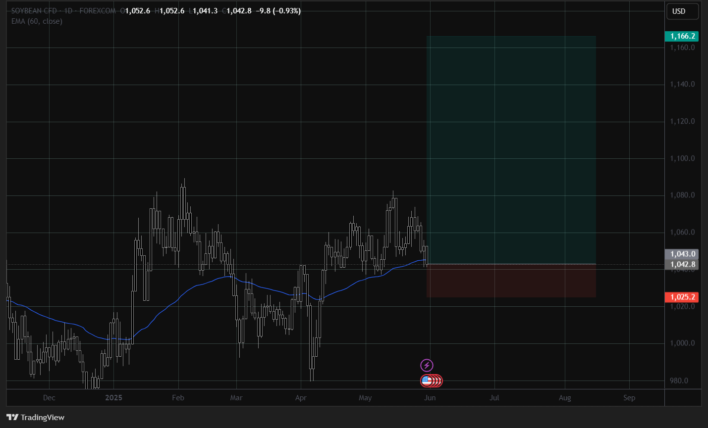
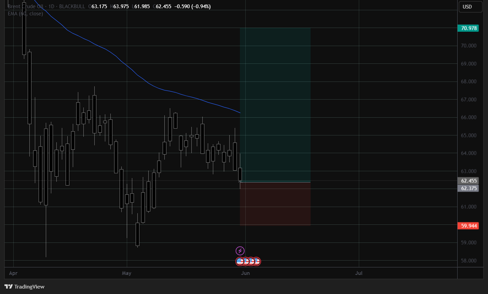

This is a journey through my personal experience and knowledge. Hop in the car and let's explore!
Use the buttons below to navigate to different points of interest.
Go to the next checkpoint to see my CV.
I have a deep passion for finance, economics and investment who always is looking for ways to expand my knowledge.
I enjoy creating interactive experiences and learning new technologies.
The next checkpoint is my live trading results
Here are some proof and screenshots of my endevours in the trading market. I managed to make a £20 account go to £6000 in the matter of 3 days. This is extreme but I used my skillsets to look for the perfect market oppurtunity to capitalise on this endevour.
My next trading endevour was £70 to £23,000. The last deposits were a deposit of profits back into the account as there was good oppurtunities to capitalise again.
This stop is to look at current market sentiment and direction. Right now the market look bullish and below are the reasons.
Looking at the m2 money supply the speed at which it is increasing is steady indicating no reversal or any disruptions.
Furthermore looking at treasury spreads, especially the 10s-2s, we are able to see an economic expansion rather than a contraction.
Also looking at CPI and PPI data we are able to see the rate of change slow down it may be indicating disinflation with possible monetary policy taking place.
Looking at the descriptive statistics we can see the standard deviation being 2.883% which is higher then the current 2.41% standard deviation level of CPI showing reduced volatility
Looking at the 6 month lagged S&P500 price with the GDP data we can see that the S&P500 increases whilst the current GDP has dropped in 2025 in the first quarter. But this can be played off as fundamental reasoning with Trump first quarter in office. We should see a rebound up which is currently occuring.
This stop is my current outlooks and watch I am projecting will occur with specific assets.
Dry whey longs. The May 2025 WASDE report projects an average dry whey price of $0.535 per pound for 2025. This was an upward revision from previous forecasts
A key theme is the divergence between sweet whey powder and whey protein concentrates.
This market is facing downward pressure, with reluctant buyers anticipating further price declines due to projected increases in milk volumes and adequate production capacity.
In March 2025, total dry whey production in the U.S. was 70.0 million pounds, down 12.4% from March 2024
But there is a Increasing health and fitness consciousness globally is a major driver for whey protein demand, particularly for WPC and WPI.
02/06/2025
Soybean longs. This is due to seasonality reasons and also Severe Drought Impact: Official Zambian Gov. forecast (May 2024) projects 169,700 Metric Tons (a 78% reduction from the previous season). Some market analysts had estimated around 150,000 tons.
Even though WASDE reports have been bearish looking at the droughts and early harvests in Argentina, importers like China will be willing to pay more for the better quality harvests
With the curret soybean supply we are able to see that their is a forecast of a decline with the soybean prices.
30/05/2025
Brent oil Long. Looking towards brent oil we can see it is around a crucial price point. Furthermore looking at the managed money of brent oil we can see most money managers have now switched to a long position compared to a short position as seen for the last 5 months
OPEC and its allies (OPEC+) have stated recently, they surprised the market by agreeing to a second consecutive monthly production increase of 411,000 barrels per day for June 2025
Increasing supply should reduce price but then managed money is long. This may be due to actual increase in supply being lower than the nominal figures due to some countries continuing to produce above targets, while others face capacity constraints or need to make compensatory cuts
Geopolitical risks, particularly in the Middle East, provide some underlying support and a risk premium
30/05/2025
Sugar Short. For sugar we can see a trend of healthy diets emerging with companies also tackling the issue of sugar
This means that in the long run other artificial sweetners or replacements will replace sugar as seen in the substitution effect
But looking at data we are seeing these forecasts being projected of global sugar consumption which is projected to reach approximately 177.92 million metric tons in the 2025/26 season, an increase from the estimated 175.44 million tons in 2024/25. This represents a growth of about 1.4%
But global sugar production is forecast to increase to 189.3 million metric tons in 2025/26. This increase is largely driven by expected bumper crops in Brazil and India.
This can indicate over supply of this crop so the following idea is a short term idea
14/05/2025
Lean Hog Long. Looking at lean hog futures we can see strong bullish sentiment. Forecasts suggest a 2.7% increase in pork production compared to 2024
In China, lower pig slaughter is anticipated due to reduced sow numbers and improved pig performance which will decrease supply increase demand
Volatile feed costs, though generally lower in North America and Europe, remain a significant factor.
03/03/2025